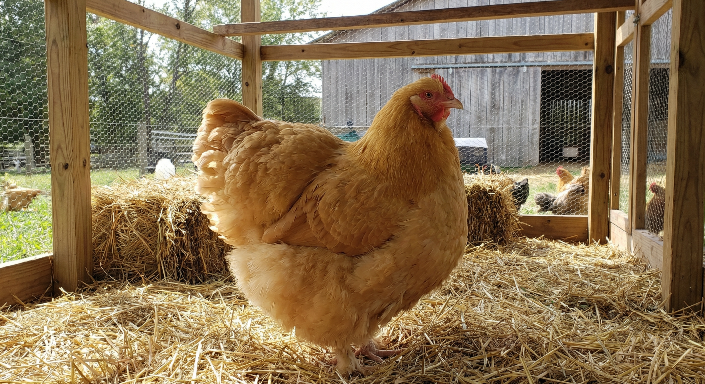

Орпингтон
О породе

Орпингтон — английская мясо-яичная порода, выведенная в конце XIX века в местечке Орпингтон (Кент). Птицы крупные, массивные, с пышным оперением и спокойным характером. Яйца кремовые и персиковые — тёплая «закатная» палитра, идеальная для подарочных наборов и стола в стиле кантри или бохо.
Окрасы разнообразны: палевый (буф), чёрный, белый, голубой и др. Палевый орпингтон — золотисто-жёлтый, один из самых популярных. Птицы хорошо набирают вес, подходят для мяса и яиц; в AVIARIUM ценятся за цвет и качество яиц.
Яйценоскость
Около 160–180 яиц в год. Нестись начинают в 6–7 месяцев. Яйцекладка умеренная, стабильная. Порода не рекордсмен по количеству, но яйца крупные, с прочной скорлупой и приятным оттенком.
Условия содержания
Орпингтоны нуждаются в сухом птичнике и просторном выгуле: тяжёлые птицы не летают, но любят двигаться. Плохо переносят сырость и скученность. Кормление — комбикорм для мясо-яичных пород, зерно, зелень, минеральные добавки. Кальций важен для прочности скорлупы.
Характеристики яйца
Цвет скорлупы: кремовый, персиковый, светло-коричневый — тёплые оттенки за счёт небольшого количества протопорфирина. Масса яйца: 55–65 г. Форма: овальная. Вкус отличный, желток насыщенный при хорошем корме. Яйца орпингтона входят в коллекции «Рассвет Империи», «Осенний лес», «Нефертити», «Османский».
В наших наборах
Яйца орпингтона — основа тёплой палитры в наборах. Подбор — в калькуляторе.